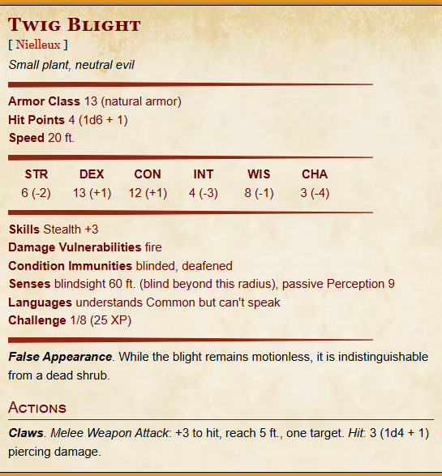
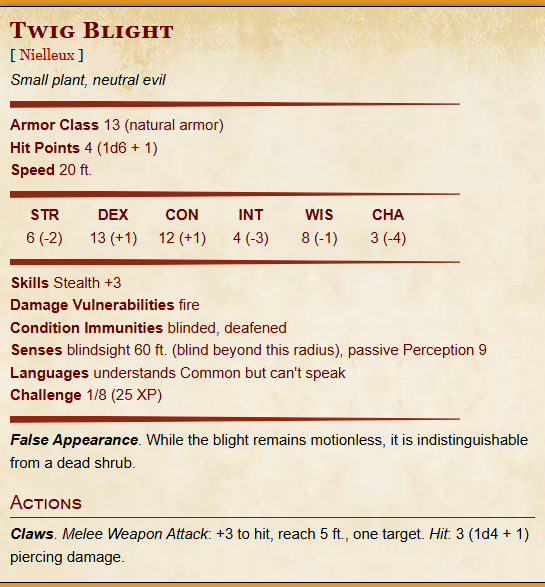

Player Characters :
Session Planning :
-
Start : Udara di dalam gua masih dingin.
Embun menggantung di udara, berkilau oleh cahaya samar yang memantul dari ukiran naga Aelethis di dinding batu — ukiran agung yang kini tercakar oleh jejak kasar, seolah ada sesuatu yang ingin menghapus sejarah itu.Suara tetesan air tik… tik… tik… bergema pelan, bercampur dengan napas kalian yang masih tersisa usai perjalanan. Lalu—
gema langkah kaki terdengar dari lorong belakang. Bukan terburu-buru.
Tidak mengancam.
Tapi tegas—
Seperti seseorang yang tahu tempat ini… dan merasa berhak berada di sini.Player action
Jejak cahaya merah mulai terlihat — pantulan dari pecahan es kecil yang menggantung di mantel kulit merah seorang pria.
Dari bayangan muncul pria muda, mata setajam mata elang, rambut kuning terang. Tubuhnya dilapisi mantel kulit merah, pedang di punggungnya terlihat mewah. Ia berhenti, menatap ukiran naga yang tercakar, lalu menatap kalian.
Angin dingin tiba-tiba menyusup masuk ke dalam gua, memadamkan sebagian cahaya obor.
Dengan suara berat, ia bicara pelan, namun penuh kewaspadaan: “Lagi-lagi temuan baru… Kalian yang menemukannya?”
-
Moment 1 : Bram Icelock seorang ketua guild di Lidone menjelaskan bahwa memang The Great Shattenro Cave jarang dijarah petualangan belakangan ini, namun hasil penyelidikan rutin dari guild, ada perubahan aneh pada gua seperti jalan yang berbeda dan kali ini ruangan baru menunjukkan ukiran naga Aelethis. Dugaan hal ini karena jiwa naga aelethis yang terganggu, mungkin cakaran ini salah satu alasan
-
Moment 2 : Keluar dari ruangan itu, suara ledakan terdengar lagi dari kejauhan, gua seakan akan bergerak, kalian aman, tapi ukiran mulai hancur, membuka sebuah lubang kecil dimana di dalamnya terdapat sebuah potongan dari lingkaran, yang jika dilihat teliti, mirip seperti simbol keluarga dan kerajaannya troy. sebuah pecahan yang tampak seperti sebuah disc.
-
Moment 3a : Back tracking keluar dari sana, malah terlihat 2 jalan baru, kamu bisa memilih berpisah dengan Bram Icelock dan 1 rekannya (gea stitsk). Berpisah akan mendatangkan kalian di sebuah ruangan puzzle Ada ukiran sebuah ukiran naga dan 10 kristal masing2 2 warna yang berserakan di lantai. Ada 4 naga dengan, dari kiri seperti ada lubang pada tiap mata mereka, DARI KIRI 1 : Ignivaros Merah Naga yang memliki 4 tanduk 2 : Sylvarax Ungu Naga paling besar di sana 3 : Tydrason Biru Naga yang memiliki sisik 4 : Aelethis Putih Naga yang memiliki 3 pasang sayap
Di tengah ada sebuah bola kristal yang jika disentuh berbunyi, ” Empat napas, empat jiwa, Ignivaros bernafas untuk membakar jiwa yang berdosa, Tydrason bernafas untuk menenggelamkan negri yang keji, Aelethis bernafas udara kencang untuk menjatuhkan kerajaan yang licik, dan Sylvarax bernafas untuk menguasai keseluruhannya”
Konsekuensi kalau salah terkena damage 1d4 oleh naga dihadapannya.
Jika benar pintu besar ditengah terbuka lebar menunjukan ruangan baru
-
Moment 3b Berjalan bersama Bram Icelock akan tiba di ruangan dengan perangkap, yang mengakibatkan tumbangnya salah satu rekannya, (fagel stitsk)
Perception check untuk mengetahui batu mana yang dapat diinjak atau tidak (DC 14 kumulatif) Kalau tidak DEX save 12, gagal 2 kali terjatuh dan terkena 1d6
-
Moment 4 (Battle 1) Langkah kalian menggema pelan saat melewati terowongan kristal terakhir. Cahaya yang tadinya memantul indah di dinding—kemilau biru yang tenang—perlahan meredup. Kilauan kristal berganti menjadi bayangan. Udara yang semula dingin dan kering berubah semakin berat… lembap… hingga terasa seperti menyentuh kulit kalian.
Deru napas terdengar lebih keras dalam keheningan. Tetesan air mulai bergema dari kejauhan, tik… tik… tik…, seolah gua ini sendiri sedang bernapas.
Begitu kalian melangkah lebih jauh, terowongan mendadak terbuka luas. Gua ini membentang besar, langit-langitnya tinggi dan gelap tak terlihat ujungnya. Permukaan tanah dipenuhi lumut tebal yang empuk, seperti karpet hijau basah yang menelan suara langkah kalian. Akar-akar merambat di sepanjang dinding batu, dan jamur kecil bersinar redup di sela batuan—memberi cahaya samar kehijauan.
Ada bau tanah membusuk. Aroma lembap, berat, hampir menyelimuti.
Diam. Sunyi. Terlalu sunyi.
Perlahan, sesuatu bergerak di antara lumut—ranting kaku yang seharusnya tidak hidup bergetar pelan. Lalu satu lagi. Dan satu lagi. Dari kegelapan hijau itu, bentuk-bentuk kecil mulai muncul; seperti tanaman yang dipaksa berjalan oleh sesuatu yang marah dan kelaparan.
Buah-buahan kering menggantung dari tubuh kecil itu. Ranting sebagai tangan. Akar sebagai jari. Mata—bukan bola mata sungguhan, tapi lubang gelap yang menatap kalian dengan rasa benci diam.
Tanah bergetar halus.
Bau hutan berubah menjadi busuk dan tajam. 
Twig Blight 1 21 (7, 12) x Twig Blight 2 7 (2, 6, ) Awan Elando Sussie 6 Troy 4 Needle Blight 2 (8, 17) x Sora 2
-
Moment 4.5 (Optional = 3b/3a) Bisa lakukan yang belum dilakukan sebelumnya
RUANG HARTA! Terdapat sebuah lorong sempit dimana bisa dimasuki oleh satu orang, di ujung terdapat sebuah peti harta karun. Tidak ada jebakan, isinya!
- Hide Armor AC 12 + DEX
- Chain Mail AC 16
- Hunting Charm (Reroll 1 failed perception/survival check once per rest)
- 2 Dagger (1d4)
- Cloak of Protection (identify dulu, +1AC and +1 aving throw)
-
Moment 5 Langkah terakhir kalian keluar dari kegelapan gua terasa seperti menembus mimpi buruk. Udara berganti seketika—dingin lembap dari dalam tanah terganti angin pagi yang lembut, menerpa kulit seperti sentuhan pertama setelah lama tenggelam.
Cahaya matahari pagi menyambut, tipis dan hangat, seakan baru bangkit dari balik pepohonan. Embun menggantung di rumput dan dedaunan, berkilau pelan seperti taburan kristal kecil. Burung-burung mulai bersuara—pelan, ragu, seakan dunia baru saja mengingat bahwa ia seharusnya hidup dan damai.
Di belakang kalian, mulut gua tampak gelap dan sunyi… terlalu sunyi. Bekas ketakutan dan pertarungan masih menempel di dada kalian. Otot terasa berat, napas belum sepenuhnya pulih, dan rasa lengket tanah gua masih menempel di pakaian. Setiap langkah terasa dua kali lebih berat dari biasanya. Tubuh kalian dingin, lelah, tapi juga… masih hidup.
Sesaat kalian hanya berdiri di sana, memandang hamparan alam yang kembali normal. Bukan akar yang melilit, bukan lumut yang hidup dengan niat jahat—hanya dunia biasa. Sederhana. Tenang. Sinar matahari pelan memantul di permukaan senjata dan kulit kalian, menghangatkan luka dan memudarkan ketegangan yang masih tertinggal.
-
Moment 6! Mau kemana sekarang? Ikut Sinna Telwright kembali ke kota bersama? Ikut Bram Icelock yang kebetulan akan bersinggah ke Velgarth di selatan? Atau pergi ke utara?
-
Moment 7a (Sinna Telwright dan Lidone) Sinna Telwright menyambut mereka kembali di depan Lidone, di sana mereka dapat berdiskusi dimana pun dan Sinna Telwright akan memberikan masing-masing 20 gold
-
Moment 8a Lakukan keliling di Lidone atau pergi menggunakan kereta kuda pinjaman Sinna Telwright menuju MOMEN B/C!
-
Moment 7b (Bram Icelock dan Velgarth melewati Thalara) Para petualang berpisah dengan Sinna Telwright dan ikut bersama Bram Icelock menuju velgarth dengan kereka kudanya.
-
Moment 7.5b opt Kalian dapat melihat hutan menyala Thalara di kejauhan, mau mampir? atau tetap ikut? Kalau mampir,
“Daun-daun lebar berwarna zamrud bergetar pelan diterpa angin yang harum — campuran aroma bunga liar, tanah basah, dan madu segar. Dari kejauhan terdengar nyanyian lembut, bukan dari manusia, tapi dari hutan itu sendiri.
Selamat datang di Thalara, kota hutan yang menjadi rumah bagi banyak ras: elf, gnome, manusia, bahkan peri kecil yang berlarian di antara ranting pohon bercahaya. Rumah-rumah mereka tidak menebang pepohonan — melainkan tumbuh bersama mereka. Dinding kayu berpadu dengan akar hidup, jendela berlumut memantulkan cahaya kuning lembut, dan jembatan gantung dari akar tua menghubungkan satu rumah ke rumah lain di atas kanopi.
Kalian mendengar tawa anak-anak tiefling berlarian sambil membawa bunga di atas kepala, pedagang air genasi menawarkan air dari mata air pegunungan dalam botol kristal, dan di kejauhan, musisi faun memainkan harpa dari tulang pohon tua. ”
Mengunjungi Perpustakaan Anak (Littlebranch Hall)
- Bangunan dari akar pohon raksasa. Dijalankan oleh dryad tua bernama Merryn Willowcall.
- Di sini, PC bisa menemukan cerita rakyat tentang Cael’Aelun yang hanya dianggap dongeng anak-anak.
- Jika mereka mau menelusuri, Merryn bisa memberi clue samar: “Pulau yang tak ingin diingat akan selalu menutup dirinya.”
Adventurers Guild “Wanderbark”
- Guild kecil tapi terkenal, dijalankan oleh Bram Icehook (bisa muncul lagi di sini).
- Tawarkan misi opsional seperti:
- Membantu menangkap roh tanaman yang mencuri perhiasan turis.
- Menyelamatkan burung phoenix mini yang terperangkap di hutan.
- Reward: item kecil berguna + reputasi dengan guild.Tavern “Leaf & Lantern”
- Tempat ramai, campur ras — tempat roleplay, info, bahkan gosip.
- Hook ringan: penyanyi bard di sini ternyata menyanyikan lagu tentang Aelethis dan Ignivaros, menyulut teori “kedua naga itu saling bertarung.”
Pasar Wisata “Twilight Bazaar”
- Bisa jadi tempat beli item aneh (misal: potion lucu, charm fae, perhiasan naga mini).
- Sora bisa mendapat pengakuan dari penjaga langit tua — membuka side lore naga-naga agung.
-
Moment 8b (END 1) “Udara di Velgarth terasa berat, bukan karena debu atau panas, tapi karena disiplin. Setiap langkah bergema di antara batu-batu persegi dan bendera yang berkibar dengan lambang perisai bersilang pedang. Jalanan lurus, dijaga oleh prajurit berzirah besi, wajah mereka kaku seolah terukir dari baja yang sama dengan dinding kota. Di kejauhan, dentuman pelatihan terdengar ritmis — suara bangsa yang hidup di bawah sumpah kekuatan. Ini bukan negeri yang ramah, tapi negeri yang tegas.
Di gerbang kereta kuda mereka dihentikan oleh sesorang penjaga, Lalu Ravessa.
-
Moment 7c (Eldengrove Enclave melewati Oakengard) Menuju Eldengrove Enclave, mereka bisa mampir dulu di Oakengard atau langsung menuju utara
-
Moment 7.5 opt Jalanan mulai lapang, dan pepohonan menipis. Udara berubah, hangat dengan aroma gandum dan tanah kering. Di kejauhan, kalian melihat desa kecil berdiri di tengah lahan luas — rumah-rumah beratap jerami, pagar kayu sederhana, dan ladang gandum yang bergoyang diterpa angin sore.
Anak-anak berlari di antara jalan tanah, membawa roti hangat di tangan, sementara para petani menyapa kalian dengan senyum dan sedikit curiga, seperti orang yang jarang melihat wajah baru tapi tak ingin bersikap kasar.
Tak ada penjaga di gerbang, tak ada suara logam atau sihir, hanya bunyi lembut air sumur dan ayam berkokok di kejauhan. Inilah Oakengard
Membantu Petani Terkena Wabah Tanaman
- Ladang mereka diserang jamur misterius — kalau diselidiki, ternyata tanahnya “terkutuk ringan” akibat sisa sihir naga Eluntheris dulu.
- Bisa jadi puzzle ringan (campuran herbal, tanah, air) untuk memulihkan ladang.
- Reward: rasa hormat warga, dan clue samar tentang Eldengrove (asal dari ladang “hidup”). Pasar Sayur & Roti “Dawnmill”
- Bisa interaksi sosial ringan: barter bahan makanan, ngobrol dengan pedagang keliling yang pernah ke Eldengrove.
- Dapat clue arah menuju relic berikutnya (kalau mereka tanya tentang ukiran naga di batu ladang, misalnya).
Rumah Pemanggang Tua (NPC hook)
- Seorang nenek bernama Tessra Lune suka bercerita tentang masa muda ketika ia melihat “cahaya hijau di tengah ladang saat badai.”
- Itu sebenarnya jejak sihir naga Eluntheris — bisa menuntun mereka ke clue Relic atau Eldengrove.
Tavern “The Quiet Grain”
- Tempat rehat, musik country lembut, dan bisa jadi tempat mereka dapat gosip kecil tentang Sorn atau Umbrasil Wood.
- Di akhir, bisa tutup dengan langit jingga dan dialog reflektif — “Tenang ya, seolah dunia di luar sana tidak pernah berperang.”
-
Moment 8c (END 2) Begitu kalian menapakkan kaki di Eldengrove, dunia terasa… lebih tua. Cahaya matahari menembus celah dedaunan seperti kaca patri hijau, menari di atas akar yang melilit dan jembatan kayu berlumut. Suara gemericik air bercampur dengan dengung mantra lembut — sihir alam yang tidak dibuat, tapi tumbuh bersama tanahnya. Di antara batang pohon raksasa, rumah-rumah gnome berdiri, terbuat dari akar hidup dan jamur bercahaya.
Udara berubah sebelum kalian melihat kotanya.
Angin membawa aroma lumut basah dan bunga liar, dan di antara akar raksasa yang melilit tanah, tampak rumah-rumah kecil berkilau seolah tumbuh dari batang pohon itu sendiri.Di atas kepala, cabang-cabang pepohonan bersatu, membentuk kanopi hijau pekat yang hanya ditembus cahaya lembut keemasan. Jalan setapak dari batu luminesen berkelok di antara jamur raksasa yang berpendar biru, dan suara air sungai kecil berpadu dengan bisikan mantra.
Inilah Eldraeth, jantung dari Eldengrove Enclave — kota yang tidak pernah tidur, namun tidak pernah berisik. Para gnome dengan kulit berjalan pelan, membawa wadah berisi air yang memantulkan bintang di siang hari. Druid dan roh hutan berbincang tanpa suara, saling mengangguk seolah semua di sini sudah saling mengenal sejak ribuan tahun.
Seorang gnome tua menghampiri para PC seakan akan tau akan kehadiran mereka. “Selamat datang kembali tuan Troy”
Serangkaian peristiwa :